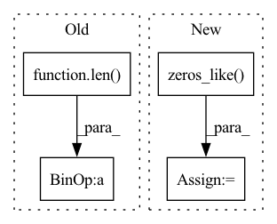

Pattern ID :4432

Before Change
device=pred.device,
dtype=torch.float32).to_dense()
mask = torch.sparse_coo_tensor(indices,
np.ones(len(ratings)),
size=pred.shape,
device=pred.device,
dtype=torch.float32).to_dense()
return mask * pred, label, float(np.prod(pred.size())) / len(ratings)
def load_state_dict(self, state_dict, strict: bool = True):
After Change
user_embedding_coo = self.embed_user.mul(
user_mask.to(self.embed_user.data.device)).to_sparse()
item_mask = torch.zeros_like(self.embed_item.data, dtype=bool)
item_mask[indices[1]] = True
item_embedding_coo = self.embed_item.mul(
item_mask.to(self.embed_item.data.device)).to_sparse()
In pattern: SUPERPATTERN
Frequency: 3
Non-data size: 4
Instances
Fragment ID: 16239703
Project Name: alibaba/federatedscope
Commit Name: 0a980385ffee6931f851dc0d2c368c0c8fbd4144
Time: 2023-03-15
Author: 18007356109@163.com
File Name: federatedscope/mf/model/model.py
M Class Name: BasicMFNet
N Class Name: BasicMFNet
M Method Name: forward(3)
N Method Name: forward(3)
M Parent Class: Module
N Parent Class: Module
M File Name: federatedscope/mf/model/model.py
N File Name: federatedscope/mf/model/model.py
M Start Line: 36
M End Line: 48
N Start Line: 35
N End Line: 55
'>
Before Change
for emo_ind in range(4):
preds_i = np.argmax(preds[:, emo_ind], axis=-1)
truths_i = truths[:, emo_ind]
acc.append(torch.sum(truths_i == preds_i).item() / len(preds))
f1.append(f1_score(truths_i, preds_i, average="weighted"))
else:
preds = np.argmax(preds, axis=-1)
After Change
truths = truths.cpu().detach()
preds_inds = np.argmax(preds, axis=-1)
preds = torch.zeros_like(preds)
for i in range(total):
preds[i, preds_inds[i]] = 1
accs = []
f1s = []
for i in range(num_emo):
pred_i = preds[:, i]
truth_i = truths[:, i]
acc = torch.sum(pred_i == truth_i).item() / total
f1 = f1_score(truth_i, pred_i, average="weighted")
'>
Fragment ID: 16239709
Project Name: wenliangdai/modality-transferable-mer
Commit Name: 38664b152a63fb703932bd0b32dfdf90fb6b3d48
Time: 2020-06-15
Author: wenliang.dai.1995@gmail.com
File Name: src/evaluate.py
M Class Name: AnonimousClass
N Class Name: AnonimousClass
M Method Name: eval_iemocap(2)
N Method Name: eval_iemocap(3)
M Parent Class:
N Parent Class:
M File Name: src/evaluate.py
N File Name: src/evaluate.py
M Start Line: 147
M End Line: 166
N Start Line: 155
N End Line: 177
'>
Before Change
threshold_high = float(clean_entropy[int(0.95 * len(clean_entropy))])
print(f"Threshold: ({threshold_low:5.3f}, {threshold_high:5.3f})")
percent = float(((poison_entropy < threshold_low) +
(poison_entropy > threshold_high)).sum().float() / len(poison_entropy))
print("Classification Acc: ", percent)
def check(self, _input) -> torch.Tensor:
After Change
print("Entropy Poison Median: ", float(poison_entropy.median()))
threshold_low = float(clean_entropy[int(0.05 * len(clean_entropy))])
threshold_high = float(clean_entropy[int(0.95 * len(clean_entropy))])
y_true = torch.cat((torch.zeros_like(clean_entropy), torch.ones_like(poison_entropy)))
entropy = torch.cat((clean_entropy, poison_entropy))
y_pred = torch.where(((entropy < threshold_low).int() + (entropy > threshold_high).int()).bool(),
torch.ones_like(entropy), torch.zeros_like(entropy))
'>
Fragment ID: 16239705
Project Name: ain-soph/trojanzoo
Commit Name: b252ab7e9a5f58cee299ad63b05fca46835a6b65
Time: 2020-09-13
Author: ain-soph@live.com
File Name: trojanzoo/defense/backdoor/strip.py
M Class Name: STRIP
N Class Name: STRIP
M Method Name: detect(1)
N Method Name: detect(1)
M Parent Class: Defense_Backdoor
N Parent Class: Defense_Backdoor
M File Name: trojanzoo/defense/backdoor/strip.py
N File Name: trojanzoo/defense/backdoor/strip.py
M Start Line: 35
M End Line: 43
N Start Line: 35
N End Line: 49